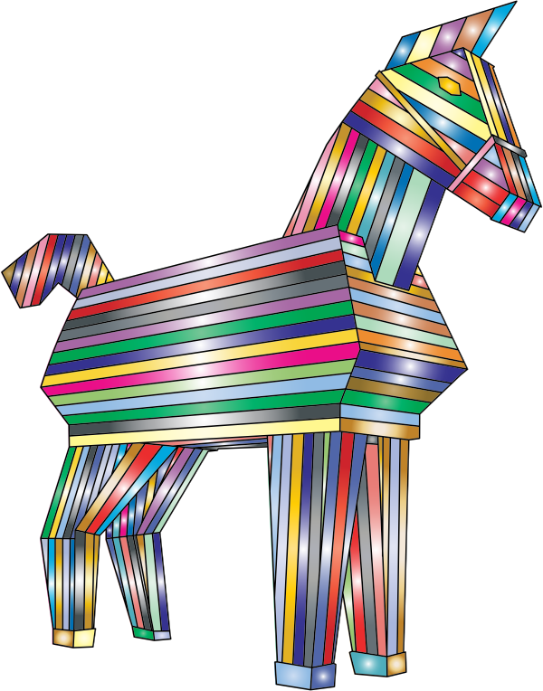

Referido a la biometría que son las medidas biológicas, o características físicas, que se pueden utilizar para identificar a las personas.
Ejemplo
Mi móvil utiliza la imagen de mi rostro para la identificación biométrica.
Cifrado
Definición
Canal para ocultar mensajes.
Ejemplo
El mensaje está cifrado.
Infraestructura
Definición
Conjunto de medios técnicos, servicios e instalaciones necesarios para el desarrollo de una actividad.
Ejemplo
La infraestructura que soporta mi conexión a Internet es muy buena.
Matriz
Definición
Conjunto de números o símbolos colocados en líneas horizontales y verticales y dispuestos en forma de rectángulo.
Ejemplo
Los valores del efecto producido por algo y de la probabilidad de que ocurra se pueden ordenar en una matriz.
Particiones lógicas
Definición
Son las divisiones que se pueden crear en el almacenamiento del disco duro de un ordenador para separar su contenido.
Ejemplo
Voy a crear una nueva partición lógica en mi disco duro para instalar otro sistema operativo.
SMS Premium
Definición
Son mensajes de texto de un máximo de 160 caracteres tipo sms (short message service o servicio de mensajes corto en español) que tienen un coste adicional no regulado y son usados con fines solidarios o para recibir contenidos especiales.
Ejemplo
He enviado varios sms Premium este mes y me ha venido una factura enorme.
Ubicuidad
Definición
Cualidad de estar presente a la vez en distintos lugares.
Ejemplo
Tienes el don de la ubicuidad, estás en todas partes.
Vulnerable
Definición
Que puede ser dañado.
Ejemplo
Mi ordenador es vulnerable a la acción de los virus informáticos.
Parece lógico pensar que lo primero que debas tener claro en cirberseguridad sea, precisamente, qué es la seguridad en Internet y cómo se puede conseguir.
Para ello vas a ver algunos contenidos previos generales sobre seguridad. Luego profundizarás en los pilares que la sostienen. Por cada uno de ellos trabajarás algunas técnicas para luchar contra las amenazas más comunes que pueden presentarse.
Esto te permitirá añadir a la guía que vas a crear algunos trucos y consejos de importancia para mantenerse a salvo de los riesgos a los que está sometida la información que manejas diariamente.
Pero esto es solo el principio, luego seguirás avanzando. Verás como te gusta.
1. Seguridad
Puedes considerar la seguridad en internet como el conjunto de precauciones que se toman para proteger todos los elementos que forman parte de la red, tanto su infraestructura como la información.
En clara relación con lo anterior está el concepto de seguridad informática, entendida como el conjunto de métodos, normas, procedimientos y herramientas para tratar de eliminar los riesgos a los que están sometidos los sistemas informáticos y en particular la información que gestionan.
Los pilares que soportan la seguridad de la información son básicamente tres y los verás en profundidad un poco más adelante. Hasta entonces quédate solo con su nombre:
Confidencialidad.
Disponibilidad.
Integridad.
Seguridad activa
Las medidas de seguridad activa son aquellas que tratan de evitar que los equipos informáticos sufran cualquier tipo de ciberataque.
Son ejemplos de este tipo de medidas los siguientes:
Las medidas de seguridad pasiva son aquellas destinadas a reducir o eliminar el efecto de los ciberataques en los sistemas informáticos cuando, por cualquier razón, se ha sido víctima de alguno de ellos.
A pesar del uso de medidas de seguridad activa, a veces, se sigue siendo vulnerable a los ciberataques debido a errores humanos, fallos de seguridad no contemplados, amenazas desconocidas, etc. En estos casos son de gran importancia las medidas pasivas como por ejemplo:
Realizar copias de seguridad.
Uso de hardware y software en la nube.
Particiones lógicas del disco duro para separar los datos y las aplicaciones.
Matriz de Riesgos
A la hora de valorar la importancia de los riesgos que pueden afectar a un sistema informático se recurre a lo que se conoce como matriz de riesgos, que no es más que una tabla que asocia un valor de riesgo a la interacción de al menos dos factores asociados a dicho riesgo:
La probabilidad de que ocurra.
La estimación del impacto que puede causar sobre el sistema informático considerado.
De una manera sencilla, ambos se pueden graduar como alto o bajo, dando lugar a cuatro posibles escenarios que ayudan a valorar qué acción llevar a cabo.
Definición
Canal para ocultar mensajes.
Ejemplo
El mensaje está cifrado.
Definición
Conjunto de medios técnicos, servicios e instalaciones necesarios para el desarrollo de una actividad.
Ejemplo
La infraestructura que soporta mi conexión a Internet es muy buena.
Definición
Son las divisiones que se pueden crear en el almacenamiento del disco duro de un ordenador para separar su contenido.
Ejemplo
Voy a crear una nueva partición lógica en mi disco duro para instalar otro sistema operativo.
Definición
Que puede ser dañado.
Ejemplo
Mi ordenador es vulnerable a la acción de los virus informáticos.
Definición
Conjunto de números o símbolos colocados en líneas horizontales y verticales y dispuestos en forma de rectángulo.
Ejemplo
Los valores del efecto producido por algo y de la probabilidad de que ocurra se pueden ordenar en una matriz.
2. Doctor ¿Es grave?
Escoge una pareja para que podáis colaborar a la hora de buscar la solución.
A continuación tenéis una lista de casos potencialmente peligrosos.
Caso 1
Recibes un email de alguien que no conoces en el que se te indica que hay una información muy importante en el archivo adjunto que contiene.
Caso 2
Alguien de tu clase te deja una memoria USB con información para un trabajo de matemáticas que tenéis que entregar.
Caso 3
El ordenador va lento o tarda mucho en arrancar, se bloquea o hace "cosas raras":
Se ejecutan sin permiso algunos programas y otros no funcionan.
El disco duro está trabajando constantemente.
No funcionan muchas páginas web.
Desaparecen algunos archivos personales y también el antivirus y el firewall no pudiendo reinstalarlos.
Se reciben correos con inicios de sesión en webs donde no has entrado.
Caso 4
Te roban el móvil.
Caso 5
Sufres un ataque de un pirata informático cuando estás jugando en línea.
Caso 6
Adivinan tu contraseña del correo electrónico.
Caso 7
Instalas un juego desde un enlace no oficial donde lo anuncian gratis.
Caso 8
Ves películas y descargas música gratuitamente de forma pirata.
Caso 9
El ordenador te muestra una ventana en la que se indica que todos tus archivos han sido cifrados hasta que pagues una cantidad de dinero y efectivamente no puedes acceder a ninguno de ellos y tienen unas extensiones raras.
Caso 10
Tu ordenador es viejo y se ha llevado algún que otro golpe a lo largo de su vida.
En vuestro cuaderno, o usando un dispositivo informático, debéis valorar, por escrito, si los riesgos que suponen son tolerables, moderados o inaceptables, utilizando para ello una matriz.
Además, en función del resultado obtenido debéis determinar si es conveniente, o no, aplicar medidas de seguridad activas, pasivas o de los dos tipos.
Dad una justificación de cada decisión que toméis, tanto a la hora de valorar la probabilidad y el impacto, como del tipo de medida que creáis conveniente.
3. Confidencialidad y contraseñas
El primer pilar de la seguridad de la información que vas a ver es la confidencialidad. Consiste en hacer accesible la información solo y exclusivamente a las personas autorizadas. Como puedes comprender, hay una relación clara y directa de este principio con las contraseñas (o passwords en inglés) por lo que resulta adecuado que trabajes un poco con ellas.
En muchas ocasiones has tenido que crear una contraseña, por ejemplo, para darte de alta en algún servicio de Internet.
Pero ¿has puesto lo primero que se te ha ocurrido? ¿ha sido lo más fácil de recordar? o ¿siempre usas la misma contraseña?
En cualquier caso, deberías ver los siguientes vídeos donde se explica cómo crear contraseñas seguras, luego tú decides el nivel de seguridad que quieres aplicar.
Consejos
Aquí van una serie de consejos prácticos para crear contraseñas seguras.
Generador online
Puede que no tengas ganas de complicarte la vida pensando contraseñas. En ese caso puedes recurrir a algunos servicios en Internet que harán el trabajo por ti generando claves seguras.
Comprobador
Otra opción interesante es la de utilizar servicios en línea que te permiten comprobar la seguridad de las contraseñas que utilizas o te vayas a crear.
Son similares a los "evaluadores" que incorporan algunas aplicaciones cuando te piden crear una cuenta, solo hay que introducir la contraseña en el espacio habilitado para ello y automáticamente te dice lo buena o mala que es.
Pero debes tener cuidado, ya que dan resultados muy diferentes según cual utilices, luego es bueno que pruebes con varios. Aquí te dejo el enlace a unos cuantos.
El de PacoPortillo, que además también te ofrece el servicio de generación de claves.
2FA
Una forma de aumentar la seguridad de forma complementaria al uso de contraseñas es lo que se conoce como "two factor authentication" (2FA), también conocido en español como autenticación (verificación o identificación) de dos factores o dos pasos.
Básicamente es acceder a una cuenta de usuario mediante una identificación adicional al nombre de usuario y la contraseña. Puede ser, entre otros métodos, añadiendo un código, datos biométricos (como huella dactilar o reconocimiento facial) o una pregunta de seguridad de la que solo tú conoces la respuesta.
A continuación puedes ver en los siguientes vídeos más información acerca del 2FA y un ejemplo de como establecerlo en tu cuenta de Google.
Definición
Referido a la biometría que son las medidas biológicas, o características físicas, que se pueden utilizar para identificar a las personas.
Ejemplo
Mi móvil utiliza la imagen de mi rostro para la identificación biométrica.
Kardia dice ¿Quieres saber más sobre la verificación en dos pasos?
Antes has visto en qué consiste la verificación en dos pasos (2FA), pero puede que te hayas quedado con ganas de saber algo más sobre ella e incluso cómo la puedes configurar en algunas de las cuentas más importantes que manejas.
Para ello aquí tienes dos enlaces que te pueden interesar:
Así funciona la autenticación en dos pasos. No se limita a hablar de sus características, si no que también destaca las principales aplicaciones que se pueden utilizar para este fin y cómo se puede activar en Google, Facebook, Instagram, Twitter y Amazon.
4. ¿Qué opinas de mi nueva contraseña?
Debéis decidir, en pareja, si las siguientes contraseñas son seguras o no, explicando, por escrito, en vuestro cuaderno o en un archivo informático, la razón de vuestra decisión.
Contraseña 1
La contraseña es: Contraseña
Contraseña 2
La contraseña es: Edelmiro-2011
Contraseña 3
La contraseña es: 123456789
Contraseña 4
La contraseña es: M4#cs9
Contraseña 5
La contraseña es: piensalobien
Contraseña 6
La contraseña es: C78-wk?2Tq
Contraseña 7
La contraseña es: Azucenatequiero
Contraseña 8
La contraseña es: 07-04-11
Contraseña 9
La contraseña es: soyelamo
Contraseña 10
La contraseña es: juan
Lumen dice ¿No lo tenéis claro?
Si tenéis problemas para decidir sobre la fortaleza de las contraseñas o no encontráis las razones que justifican vuestra opinión podéis recurrir al uso de los comprobadores de contraseñas que podéis localizar utilizando el buscador en Internet o recurriendo a los enlaces dados en el punto anterior.
5. Seamos serios
En pareja cread contraseñas seguras para las siguientes cuentas:
El correo electrónico.
Instagram.
Tik Tok.
La WIFI de vuestra casa.
Lumen dice ¿Os faltan buenas ideas?
Si no se os ocurre nada apropiado para crear las contraseñas o tenéis dudas, podéis utilizar generadores de contraseñas o seguir los consejos que habéis aprendido y luego comprobarlos.
Kardia dice Si quieres probar con la 2FA, ¡adelante!
Una vez que tengáis creada la contraseña de Instagram podéis entrar en vuestra cuenta para cambiarla.
Además activar la verificación en dos pasos siguiendo las instrucciones aparecen en este enlace.
Una vez hechos estos cambios podéis escribir en el cuaderno vuestras conclusiones acerca de la seguridad que aporta la autenticación en dos pasos con respecto al uso exclusivo de contraseñas en una cuenta.
6. Disponibilidad y copias de seguridad
El segundo pilar de la seguridad de la información que vas a ver es la disponibilidad. Consiste en asegurar que la información esté accesible cuando se requiere. Para ello hay que evitar a toda costa que haya pérdidas o fallos de acceso. Una medida fundamental en relación con este principio es la realización de copias de seguridad de dicha información, por lo que, a continuación, vas a tratar este aspecto con un poco más de detenimiento.
Una copia de seguridad o de respaldo o backup es una duplicación de los archivos informáticos en un lugar secundario como un disco duro externo o la nube para su conservación y protección.
A la hora de realizar copias de seguridad en tu sistema es conveniente que se cumplan una serie de características para que sean plenamente efectivas. A continuación se detallan las más importantes.
Actualizada
Hay que hacerlas de forma periódica para que esté lo más actualizada posible, sobre todo de la parte más importante o sensible.
Es recomendable que los archivos críticos los actualices diariamente, mientras que el resto de información se puede hacer semanalmente o al menos una vez al mes.
Planifica las fechas y no las retrases.
Existen programas, tanto gratuitos como de pago, para gestionar las copias de forma automática.
Ubicuidad
Hay que procurar la ubicuidad de las copias para lo que hay que realizarlas en distintos lugares a la vez teniendo en cuenta la regla 3-2-1:
Tener 3 copias en total.
En al menos 2 soportes diferentes (por ejemplo un disco duro externo y la nube).
Que 1 copia esté alejada físicamente de tu ubicación (en la nube por ejemplo).
Cifrada
Si puedes, procura que la copia esté cifrada o al menos que tenga algún sistema de seguridad de acceso, sobre todo si la sueles llevar contigo y contiene información confidencial.
Exclusividad
Cuando utilices dispositivos físicos procura que sean exclusivos para el uso de copia de seguridad, de manera que reduzcas su desgaste, riesgos de sufrir daños accidentales y su exposición a sistemas potencialmente inseguros o a fuentes de riesgos.
Además, nunca hagas copias en dispositivos desconocidos o que no sean de fiar para evitar riesgos adicionales.
Definición
Cualidad de estar presente a la vez en distintos lugares.
Ejemplo
Tienes el don de la ubicuidad, estás en todas partes.
Kardia dice Puedes usar una aplicación
Existen aplicaciones como duplicati que te permiten gestionar tus copias de seguridad.
Si estás interesado en este tipo de aplicaciones puedes buscar información sobre duplicati y sobre otras alternativas, tanto gratuitas como de pago.
7. ¡Qué bien! te he pillado copiando
En pareja vais a hacer pruebas con las copias de seguridad.
Seleccionad varios archivos para incluir en una copia de seguridad que debéis hacer en un pendrive y en la nube.
Seguidamente deja que tu pareja borre uno de esos archivos, el que elija.
Después que te diga cuál ha borrado para que tú lo busques y lo restaures desde la copia.
A continuación haced lo mismo invirtiendo los papeles.
8. ¿En tu disco duro o en la nube?
En el ejercicio anterior habéis trabajado las copias de seguridad en un pendrive y en la nube. Aunque el resultado es prácticamente igual, cada uno tiene sus ventajas e inconvenientes.
A la luz de vuestra propia experiencia, debatid entre toda la clase sobre cuál de los dos soportes os parece mejor en el caso de que solo podáis usar uno de ellos.
Si lo creéis conveniente podéis tomar notas de las aportaciones que os parezcan más interesantes.
¿Necesitas ayuda para tomar notas?
Conoce la guía para la competencia de aprender a aprender donde encontrarás una ayuda para tomar notas. Es una herramienta que te ayudará a poder realizar este ejercicio. Aquí tienes el enlace al apartado de la guía "Hago mis anotaciones".
9. Integridad y malware
El tercer pilar de la seguridad de la información que vas a ver es el conocido como integridad y garantiza la exactitud y fiabilidad de la información. Supone que la información se mantenga inalterada ante accidentes o ataques maliciosos, por lo que evita modificaciones no autorizadas, daños o errores. Este aspecto se relaciona por tanto muy directamente con la evitación de los efectos producidos por el malware, por lo que es conveniente que conozcas algo al respecto.
La palabra malware proviene de la unión de los términos en inglés "malicious" y "software". Engloba a todo código informático (software) creado para realizar acciones dañinas de forma intencionada y sin consentimiento de los usuarios del equipo informático infectado, provocando problemas de funcionamiento o robos de información. Según el comportamiento de ese código y su forma de actuar, recibe diversos nombres específicos dando lugar a una amplia tipología de entre la que destaca los que puedes ver a continuación.
Virus
Producen una alteración del funcionamiento de un dispositivo sin el consentimiento del usuario, corrompiendo y destruyendo archivos.
Necesitan intervención humana para extenderse porque no se ejecuta automáticamente. Cuando el usuario lo activa se propaga infectando a otros ficheros.
Sus efectos son muy variados desde graves a aparentemente inofensivos.
Gusanos
Conocidos en inglés como worms, son capaces de duplicarse a sí mismos por lo que se propagan automáticamente sin necesidad de infectar otros archivos.
Su finalidad es consumir recursos de un sistema o red de comunicaciones, hasta saturarlo y provocar su caída.
Troyanos

Permiten a un usuario no autorizado tomar el control posibilitando la administración a distancia del equipo infectado.
Se introducen en un dispositivo al ejecutar un programa que los instala para que realicen su función en segundo plano de forma invisible y aparentando ser inofensivos.
Spywares
Se encargan de recopilar, de manera fraudulenta, la información sobre la navegación del usuario y sobre sus datos personales y bancarios.
Un ejemplo de spyware son los Keyloggers que registran la actividad con el teclado (las teclas que se pulsan), para luego enviarla al ciberdelincuente.
Ransomwares
Son capaces de tomar el control del dispositivo bloqueando o cifrando la información del usuario para pedir dinero a cambio de liberar o descifrar los ficheros afectados.
Pueden llegar camuflados en adjuntos de correos electrónicos o en páginas web poco fiables que inviten a descargar algún archivo. También pueden aprovechar fallos de seguridad del sistema operativo o incluso de aplicaciones.
Adwares
Ofrecen publicidad no deseada o engañosa que aparece en el navegador mediante gran cantidad de ventanas emergentes con gran contenido visual, e incluso audios.
Se reproducen de manera automática y en ocasiones provocan que el buscador del usuario se cambie por otro, generando errores en las búsquedas y entorpeciendo la navegación.
Botnets
Son redes de dispositivos infectados que se utilizan para lanzar ataques, como el envío masivo de correos spam, denegación de servicio (DDoS), robos de información, etc.
Una vez que un dispositivo está infectado, entrará a formar parte de la red cuyo objetivo es seguir expandiéndose.
¿Cómo puedes protegerte de tantas amenazas? Mira el siguiente vídeo.
Para concluir este apartado te voy a contar que es posible verificar si un antivirus está activo y funcionando. Para ello se utiliza la prueba EICAR desarrollada por el Instituto Europeo para la Investigación de los Antivirus Informáticos.
No es más que un inofensivo archivo de texto que es detectado como amenaza por los antivirus para así hacer una prueba sin riesgo real para el sistema.
Por otro lado, determinadas webs, como la de "virustotal" te permiten subir archivos para que sean analizados por varios programas de antivirus del mercado.
Kardia dice ¿Quieres saber algo más sobre EICAR?
Si estás interesado en conocer algo más acerca de la prueba EICAR que se utiliza para comprobar el funcionamiento de los antivirus, solo tienes que pinchar en este enlace.
10. Tú sí que sabes tratar al malware
Propón una solución para cada una de las situaciones de riesgo, debido al efecto de un malware, que se describen en cada apartado.
Tienes dos opciones distintas con dificultad creciente. Escoge la que creas que mejor se adapta a tus conocimientos.
Opción A: Empareja
Las siguientes tarjetas esconden la descripción de diferentes amenazas que debes emparejar con las respectivas descripciones de una posible forma de protegerse. Léelas con atención para encontrar las correspondencias.
Opción B: Piensa
Hay diversas situaciones en que, dependiendo de cómo actúes, puedes poner tu información o tus equipos digitales en riesgo frente al daño que puede causar el malware.
Seguidamente vas a ver algunos de esos casos para los que debes proponer una solución adecuada que te proteja del riesgo adquirido.
Malware en archivos
Te dejan una memoria USB con información para un trabajo y tiene un archivo infectado con malware.
Malware genérico
Hace meses que no actualizas el ordenador, el antivirus ni los programas y de repente tu equipo empieza a hacer “cosas raras”.
Fraude
Para desbloquear un nivel y seguir jugando tienes que meter tu número de móvil y empiezas a recibir mensajes SMS Premium.
Malware por ver un vídeo
Un amigo o amiga te manda un vídeo que es “alucinante”, y que “no te lo vas a creer”, pero al reproducirlo te pide instalar algo que infecta tu equipo.
Malware al navegar
Te salta un mensaje de alerta “tu batería está infectada” y pinchas en el botón que sale para “solucionarlo”, pero… no para de salir publicidad.
Ransomware
Tu ordenador ha sido “secuestrado”, no puedes usarlo ni acceder a tus trabajos y fotos hasta que pagues un rescate.
Malware en programas
Instalas un juego desde una página no oficial donde lo anuncian gratis, pero infecta tu equipo con un malware.
Definición
Son mensajes de texto de un máximo de 160 caracteres tipo sms (short message service o servicio de mensajes corto en español) que tienen un coste adicional no regulado y son usados con fines solidarios o para recibir contenidos especiales.
Ejemplo
He enviado varios sms Premium este mes y me ha venido una factura enorme.
11. ¿Está sano tu antivirus?
En parejas vais a hacer una prueba del antivirus de vuestro ordenador utilizando la cadena EICAR.
Para ello, tan solo tenéis que hacer lo siguiente:
Abrir el bloc de notas. Podéis usar también uno en línea como editpad (hay que pinchar en la opción "create new text note").
Copiar y pegar la siguiente cadena de texto: X5O!P%@AP[4\PZX54(P^)7CC)7}$EICAR-STANDARD-ANTIVIRUS-TEST-FILE!$H+H*
Guardar el archivo en vuestro escritorio.
Pasar el antivirus. Si no disponéis de ninguno o no lo reconoce el vuestro podéis subirlo a la web de virustotal.
Escribir en vuestro cuaderno las conclusiones de esta experiencia.
Motus dice ¡Sigue así!
¡Ánimo! ya estás a medio camino. Te estás esforzando mucho y ya está dando los primeros resultados. Si no, mira todo lo que has hecho hasta ahora y comprobarás lo que ya has aprendido.
Cuando quieres alcanzar una meta no valen atajos. Solo el esfuerzo continuado como el que tú estás desarrollando a la hora de aprender te garantiza el éxito para conseguir tus objetivos. ¡Sigue así! y no te rindas verás que a largo plazo habrá merecido la pena.